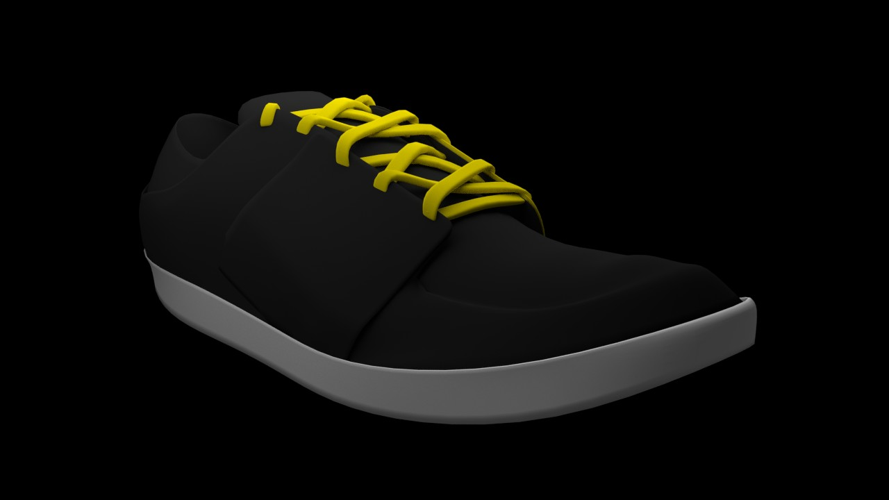

Описание
Видео

3D-модель кроссовка
История создания
В конце XVIII столетия люди носили обувь с каучуковой подошвой, которые назывались парусиновыми туфлями, но они были довольно грубыми и примитивными, не было разделения на правую/левую ногу. 1895 — Джозеф Уильям Фостер (Болтон, Англия) изготовил первую шипованную обувь.
Приблизительно в 1892 году «Американская Резиновая Компания» придумала более удобную резиновую обувь с верхом из ткани, которая получила название «кеды» («keds»). К 1917 году эта обувь поступила в массовое производство; она получила название «сникеры», образованное от англ. to sneak — красться, потому что человек, носящий их, шёл так тихо, что мог подкрасться к кому угодно.